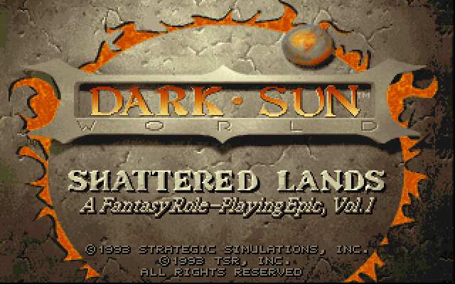
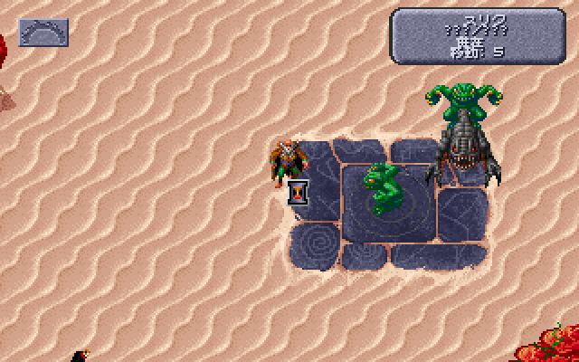
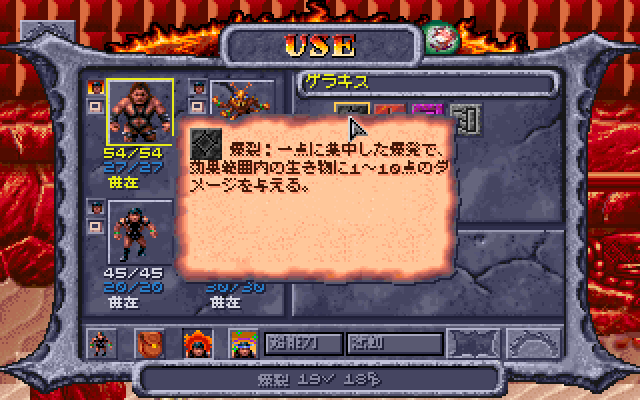
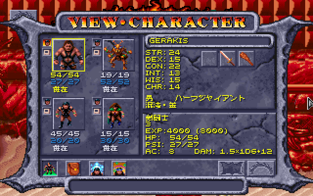
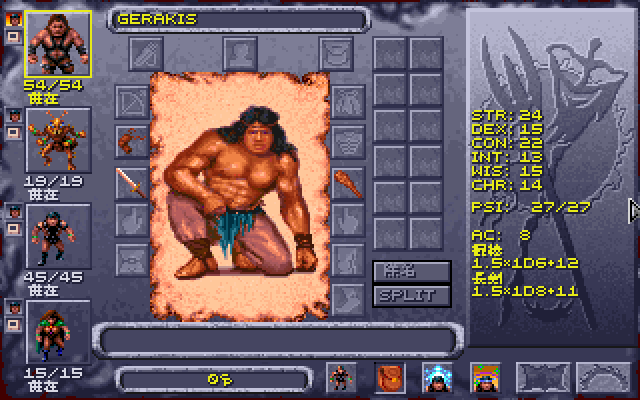

どんなゲーム？
ダークサン ～シャッタード・ランド～は、1993年に SSI から発売された AD&D 公式ライセンスの RPG です。灼熱の太陽に焼かれた砂漠の世界アタスを舞台に、見下ろし型の画面で一行を動かし、その場で戦う新しい作りのゲームです。
都市国家ドラジは、自らを神と称する魔術師王テクトゥクティトレイに支配されています。主人公たちは闘技場で戦わされる奴隷の剣闘士。仲間とともに奴隷の囲いを抜け出し、外の荒野で自由の民と手を結び、やがて攻めてくるドラジの軍勢に立ち向かいます。
Dark Sun: Shattered Lands
Steam 版「Dungeons & Dragons: Dark Sun Series」に入っている「Dark Sun: Shattered Lands」を日本語で遊べるようにする、非公式のファンメイドパッチです。 人物との会話と返事の選択肢、できごとの文、戦闘の欄、キャラクター作成とキャラクター情報、持ち物、 呪文と超能力の名前と説明、アイテム・人物・怪物の名前、画面のメッセージまでを日本語にしています。 ゲームの DOSBOX フォルダにファイルを 1 つ置くだけで日本語になり、消せば英語に戻ります。
ダークサン ～シャッタード・ランド～は、1993年に SSI から発売された AD&D 公式ライセンスの RPG です。灼熱の太陽に焼かれた砂漠の世界アタスを舞台に、見下ろし型の画面で一行を動かし、その場で戦う新しい作りのゲームです。
都市国家ドラジは、自らを神と称する魔術師王テクトゥクティトレイに支配されています。主人公たちは闘技場で戦わされる奴隷の剣闘士。仲間とともに奴隷の囲いを抜け出し、外の荒野で自由の民と手を結び、やがて攻めてくるドラジの軍勢に立ち向かいます。





DarkSun_JP.zip を展開します。winmm.dll を、ゲームの DOSBOX フォルダ（DOSBox.exe があるフォルダ）にコピーします。games\Dark Sun-ENG\DOSBOX に進みます。GOG 版の DOSBox（0.74-2.1）にも合わせてあります。GOG 版でも、ゲームを入れたフォルダの中の DOSBOX フォルダに winmm.dll を置いてください（GOG 版の DOSBox の上で日本語になることは確かめましたが、GOG 版のゲームそのものでの動作はまだ確かめていません）。
ゲームのファイルは書き換えません。日本語化に使うファイル（DSUN.EXE と RESOURCE.GFF に手を入れたコピー）は、起動時に %LOCALAPPDATA%\DarkSun_JP フォルダに作られます。
DOSBOX フォルダの winmm.dll を消すと英語に戻ります。%LOCALAPPDATA%\DarkSun_JP フォルダも消してかまいません。セーブデータはそのまま使えます。A地図 C呪文 V見る）。いつもどおり英字のキーで選べます。誤訳や不自然な訳に気づいたら、GitHub の Issues で教えてください。